Aktuálna ponuka
Nehnuteľnosti, ktoré ponúkam
11 nehnuteľností na predaj a prenájom. Vyberte typ, alebo napíšte lokalitu.
11 z 11 ponúk
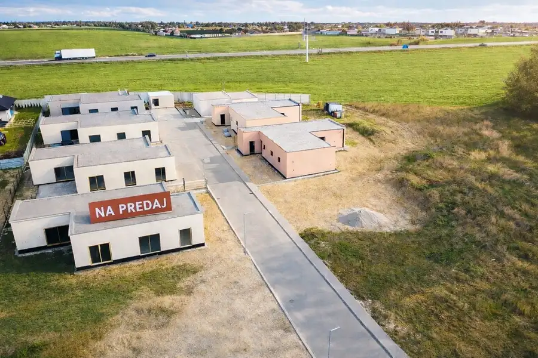
Rodinné domy5 355 000 €Novostavby rodinných domov Trenčín, pozemok 499 m2 Trenčín 4-izbový138 m² Hľadáte pokojné bývanie v blízkosti prírody, no zároveň s výbornou dostupnosťou do mesta? Tieto moderné rodinné domy vám ponúkajú ideálnu kombináciu…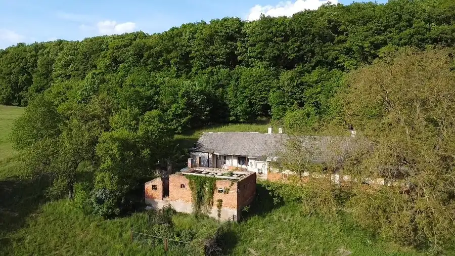
Rodinné domy10 230 000 €PREDAJ Pozemok s pôvodným domom a obrovským potenciálom v Melčiciach Melcice, Melčice 3977 m² Ponúkame na predaj priestranný pozemok v malebnom a pokojnom prostredí, ideálny pre tých, ktorí hľadajú miesto na rekonštrukciu, víkendové bývanie…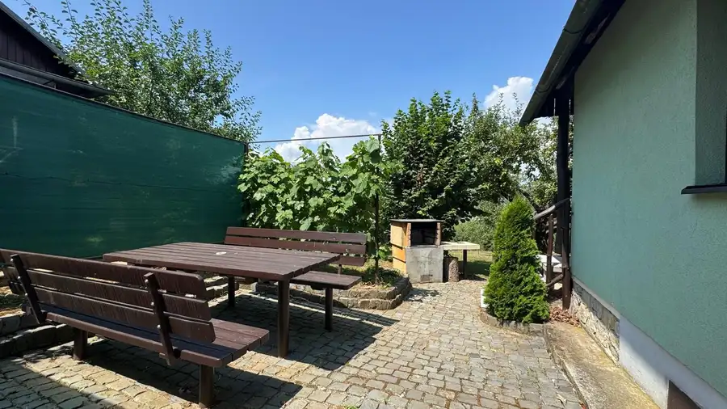
Chaty a chalupy10 54 500 €Udržiavaná chatka s pozemkom v Dubnici nad Váhom – Blížne doliny Dubnica nad Váhom 25 m² Hľadáte miesto na oddych, záhradkárčenie alebo víkendové úniky z mesta? Ponúkame na predaj udržiavanú chatku so záhradou v obľúbenej záhradkárskej…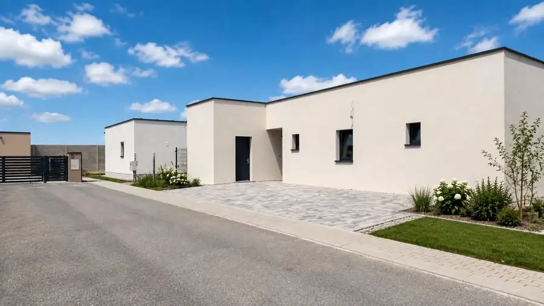
Rodinné domy10 355 000 €Posledný voľný rodinný dom – Trenčín, záblatie, pozemok 500 m2 Trenčín 4-izbový135 m² Ponúkame na predaj posledný voľný rodinný dom v novovybudovanom projekte v obľúbenej časti Trenčína – Záblatie. Dom je aktuálne dokončený do štádia…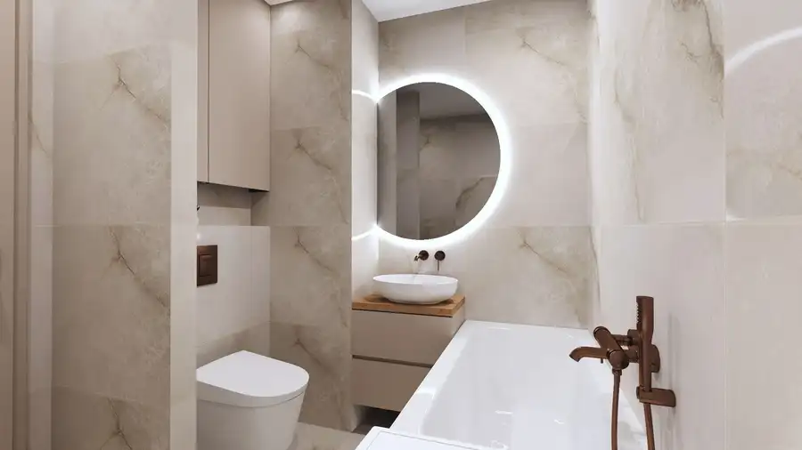
Byt4 179 900 €PREDAJ Kompletne zrekonštruovaný 3-izbový byt na Sihoti v Trenčíne Trenčín 3-izbový61 m²2. podlažie Ponúkame Vám na predaj príjemný, veľmi dobre dispozične riešený 3-izbový byt s celkovou výmerou 61 m², nachádzajúci sa vo vyhľadávanej lokalite Sihoť…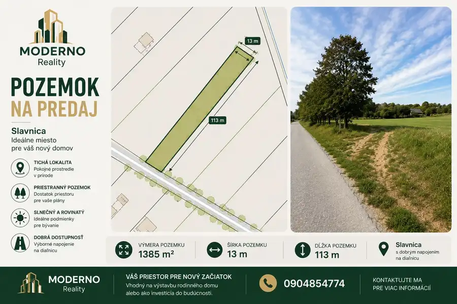
Pozemok 39 900 €Na predaj pozemok v obci Slávnica - časť Podhorie, 1385 m2 Slavnica 1385 m² Ponúkame na predaj slnečný stavebný pozemok o výmere 1 385 m² v krásnom a pokojnom prostredí obce Slávnica – časť Podhorie. Rozmery pozemku:…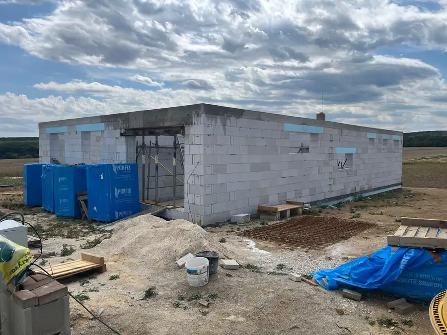
Rodinné domy5 349 000 €Novostavba 4-izbového bungalovu s garážou - Trenčianske Jastrabie Trenčianske Jastrabie 4-izbový141 m² V Trenčianskom Jastrabí, iba približne 15 minút od Trenčína, ponúkame na predaj moderný rodinný dom vo výstavbe. Nachádza sa v novej a pokojnej…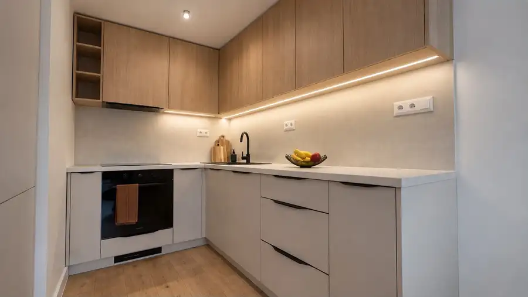
Byt4 164 900 €Kompletne zrekonštruovaný 3-izbový byt v Novej Dubnici Nová Dubnica 3-izbový67 m²2. podlažie Naša spoločnosť ponúka na predaj kompletne zrekonštruovaný 3-izbový byt s výmerou 67 m², nachádzajúci sa na 2. poschodí bytového domu na ulici P. O.…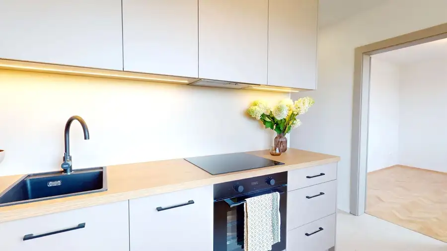
Byt4 174 900 €3-izbový byt po kompletnej rekonštrukcii s 3 balkónmi (Nová Dubnica) Nová Dubnica 3-izbový74 m²8. podlažie Byt sa nachádza na najvyššom 8. poschodí z 8 v panelovom bytovom dome s výťahom. Výhodou najvyššieho poschodia je predovšetkým absencia susedov nad…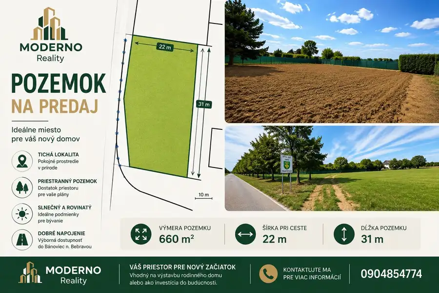
Pozemok3 44 900 €NA PREDAJ – rovinatý stavebný pozemok v Pravoticiach | 660 m² Pravotice 660 m² Ponúkame na predaj pekný rovinatý pozemok v obci Pravotice, s výbornou dostupnosťou do Bánoviec nad Bebravou. Pozemok má celkovú výmeru 660 m² a…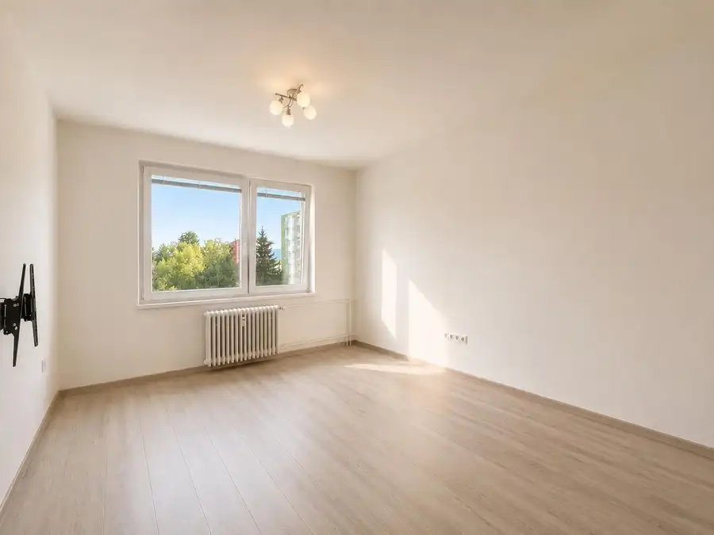
Byt6 129 800 €Kompletne prerobený 2-izbový byt s klimatizáciou, Mojmírova Púchov Púchov 2-izbový46 m² Hľadáte hotové bývanie bez potreby ďalších investícií alebo nehnuteľnosť vhodnú na následný prenájom? Ponúkame na predaj kompletne zrekonštruovaný…Tomuto výberu zatiaľ nezodpovedá žiadna ponuka. Napíšte mi, čo hľadáte.